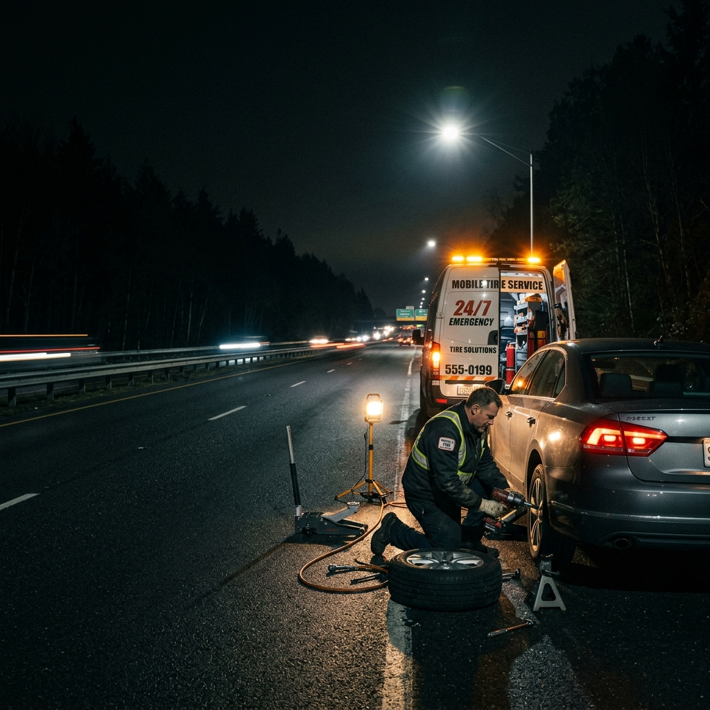

Batman Mobil Lastik Yol Yardım
Lastik arızası nedeniyle yolda kaldığınızda, Batman Merkez ve çevresinde bulunduğunuz noktaya mobil servis talep edebilirsiniz.

Yerinde lastik desteği
Lastiğin durumunu bulunduğunuz noktada değerlendiriyoruz. Tamire uygun lastiklerde onarım, değişim gereken durumlarda lastik değişimi için destek sunuyoruz. Yapılabilecek işlem, arızanın türüne ve lastiğin durumuna göre belirlenir.
Servisi nasıl çağırabilirsiniz?
Aradığınızda konumunuzu veya yakınınızdaki bir yol işaretini, araç tipini ve lastikteki sorunu belirtin. Biliyorsanız lastik yanağındaki ebat bilgisini de paylaşın. Bu bilgiler, ihtiyacınız olan ekipman ve lastiğin değerlendirilmesini kolaylaştırır.
Hizmet bölgesi ve ulaşım
Batman Merkez ve çevresinde mobil lastik desteği veriyoruz. Bulunduğunuz noktanın hizmet kapsamında olup olmadığını, o anki müsaitliği, tahmini ulaşım süresini ve ücret bilgisini telefonla öğrenebilirsiniz. Ulaşım süresi konum ve yol koşullarına göre değişir.
Sık sorulan sorular
Gece de servis çağırabilir miyim?
Mobil lastik yol yardım için 7/24 iletişime geçebilirsiniz. Konumunuza ulaşım ve servis müsaitliği görüşme sırasında değerlendirilir.
Her lastik yerinde tamir edilebilir mi?
Hayır. Lastiğin hasarı ve durumu kontrol edilmeden tamir kararı verilemez. Uygun olmayan lastikler için değişim seçenekleri değerlendirilir.
Servis ücretini nasıl öğrenebilirim?
Konum, araç tipi ve ihtiyaç duyulan işlemi paylaşarak bilgi alabilirsiniz. Sabit bir ulaşım süresi veya her iş için aynı fiyat sözü vermiyoruz.